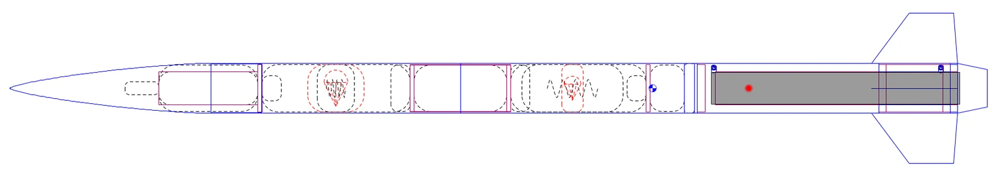
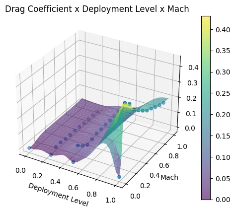
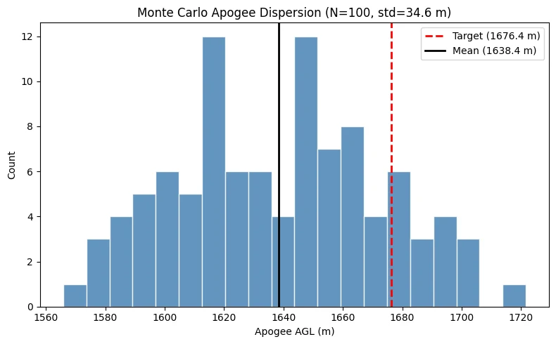
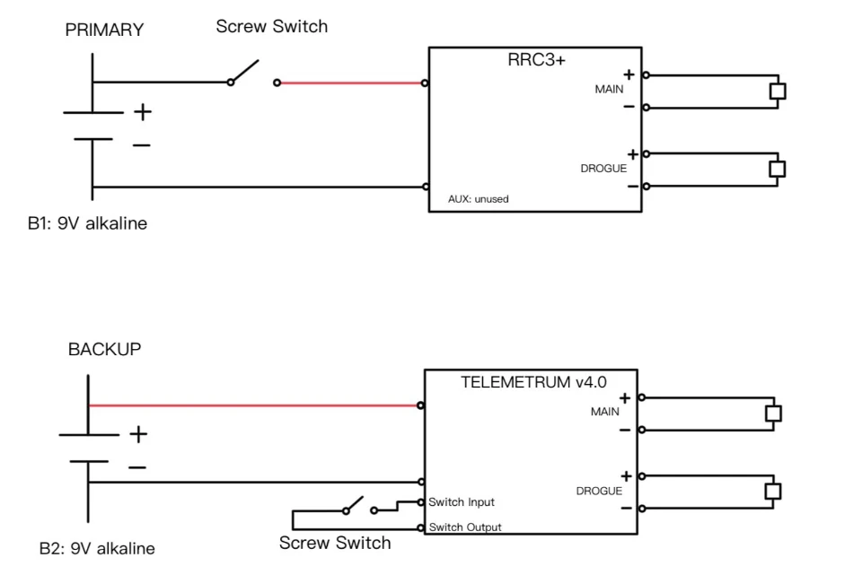
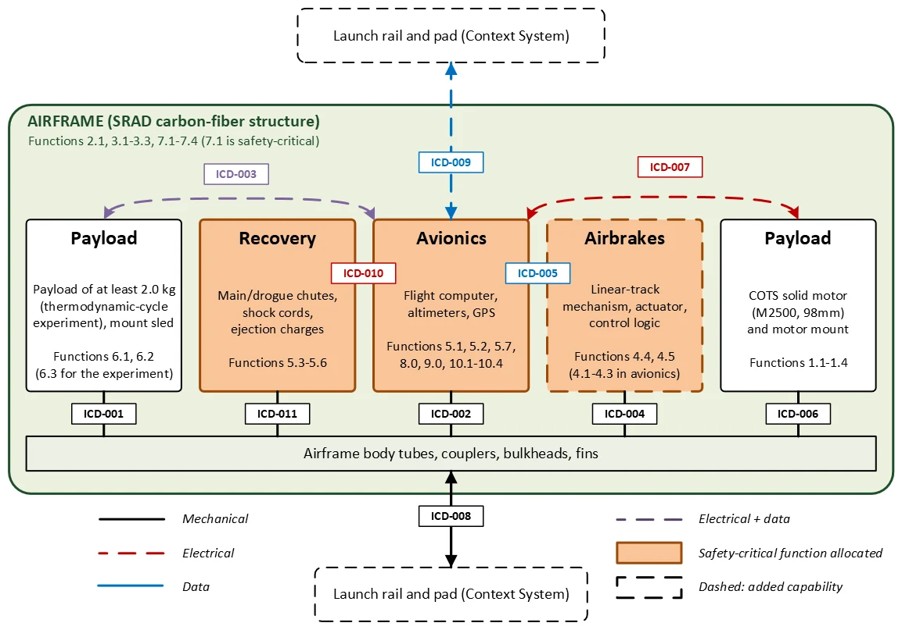

Bighorn: IREC 2027 Competition Rocket
Bighorn is Colorado State University's entry in the 10,000 ft COTS category of the 2027 International Rocket Engineering Competition in Midland, Texas, and CSU's first IREC entry since 2018. It flies a commercial motor in a student-built carbon fiber airframe, with active airbrakes to trim apogee and a functional refrigeration-cycle payload. The project also runs as a MECH 486A senior design capstone. As Chief Engineer and Team Lead, I am responsible for every technical decision on the vehicle.
My focus: Technical authority over all decisions, processes, and methods. Hands-on lead for the SRAD composite airframe and the airframe and airbrake software. Design decisions for avionics, payload, and recovery against the IREC requirements.

- Category
- 10,000 ft AGL, COTS solid
- Motor
- AeroTech M2500T, M-class
- Airframe
- 6.0 in SRAD prepreg carbon fiber
- Competition
- June 19, 2027, Midland, TX
Mission
Bighorn has to reach 10,000 ft above ground level carrying at least 4.4 lb (2.0 kg) of payload. Accuracy is scored. Under the 2027 rules, altitude points fall linearly to zero at 30% off target, so the window runs from 7,000 to 13,000 ft. Safety comes first: range officers only clear a vehicle that shows stable flight, controlled descent, and rule-compliant hardware.
I chose the COTS category on purpose. Flying a proven commercial motor puts the development effort into the parts that are new for us: the SRAD carbon fiber airframe, the active airbrakes, and the payload. The plan is a subscale flight and two full-scale flights before competition, each behind a go/no-go review and each with a backup date two to four weeks later for Colorado weather.
My role
As Chief Engineer and Team Lead, I own every technical decision on Bighorn, along with the processes and methods used to make and verify them. I make the final call on trades and sign off before work moves past a gate.
My own engineering work is the composite airframe and the software behind the airframe and airbrakes: the laminate analysis tool and the airbrake controller. For avionics, payload, and recovery, I made the design decisions that meet the IREC requirements.
I also built the program. I turned the IREC effort into an official senior design capstone with a three-slide proposal to the course instructor and department leadership, defined the technical scope, recruited the team, and run the schedule. My rule is to lock the gate dates first and schedule backward from them.
Building the program
Most members had no competition rocketry experience. I wrote a "START HERE" guide covering what IREC is, how it is scored, the deadlines, and the roles. I also wrote a requirements reference for each subsystem that pulls the key numbers from the competition rules and the Design, Test & Evaluation Guide. For onboarding, I built an interactive subsystem dependency map covering airframe, propulsion, airbrakes, avionics, recovery, and payload, which can be filtered by flight phase.
I recruited at the senior design industry showcase, prioritizing systems engineering, avionics, payload, composites and machining, and safety. Most seniors graduate in May 2027, a month before competition, so I confirmed June availability early, set the design freeze after the May flight, and am training underclassmen to carry the program forward.
On funding, I secured a $5,000 NASA Colorado Space Grant award and built the sponsorship package. I manage the vendor and sponsor relationships, including Prodigm, Ability Composites, Composites One, Ursa Major, Relativity, and Online Metals, and I arranged donated Toray prepreg through a retired CSU composites professor. I also budgeted a COTS fallback airframe in case the composite schedule slips.
- Predicted apogee
- 10,907 ft, airbrakes off
- Liftoff mass
- 24.13 kg, with 2.85 kg payload
- Stability
- 11.1% minimum during boost
- Max velocity
- 332 m/s, 34.7 m/s off the rail
Vehicle
Bighorn is a single-stage, 116.3 in (2.95 m) rocket on a 6.0 in carbon fiber airframe laid up on aluminum mandrels. The nose cone is fiberglass laid up in a mold, because fiberglass lets the GPS signal through. The clipped-delta fins span 6.0 in and are waterjet-cut from 0.2288 in carbon fiber plate by an outside shop, which frees our own fabrication time for the airframe and airbrakes. The clipped delta beat the next planform 97 to 87 in a weighted trade study, mostly on flutter margin.

The AeroTech M2500T was the most common motor among past IREC entries, 26 of 56 in a survey of earlier technical reports, and it pulls a peak of 17.02 g on Bighorn. The submitted simulation predicts 10,907 ft in a standard atmosphere. Midland's thinner June air adds roughly 577 ft, so the baseline overshoots in every expected condition. That is deliberate: airbrakes can only remove altitude. Before CDR, ballast or the second-ranked motor, a Cesaroni M3400-P, will bring the nominal apogee closer, and the airbrakes will correct what remains. Landing within 100 ft of target scores at least 338.3 of 350 altitude points.
Composite airframe
The airframe is my main hands-on work. The tubes are Toray 2510 unidirectional T700G prepreg, hand-laid on aluminum mandrels, vacuum-bagged, and oven-cured at 270 °F in university lab ovens. I chose hand layup over filament winding because a six-week vendor lead time put the schedule at risk. Hand layup keeps manufacturing in-house. The current schedule is 8 plies, [0/90/0/45/−45/0/90/0], for a 0.048 in nominal wall.
I wrote the layup procedure. An outside composites reviewer left 18 comments on the first revision, and Rev 2 resolved all of them. The biggest fix was demold physics: V1 reheated the mandrel, while Rev 2 relies on controlled cooling, because aluminum shrinks away from the laminate as it cools. Rev 2 also adds cure parameters from the technical data sheet, swaps peel ply for non-perforated release film, adds a part-mounted thermocouple for hold timing, adds a pre-cure leak check (less than 2.0 inHg drop in 5 minutes), and corrects the vacuum target for Fort Collins' roughly 5,000 ft elevation. Rev 3 is in progress.
I built a MATLAB/Octave laminate tool with adjustable parameters. It applies classical laminate theory and micromechanics, so a change in fiber volume fraction carries through every result. It also checks layup rules: balance, symmetry, the 10% rule, and no more than four consecutive plies at the same angle. Its most useful output is an automated mandrel-release check. Aluminum expands more than the laminate, so the tube's hoop CTE has to stay below aluminum's (about 23.6 µε/°C) or the cured tube locks onto the mandrel. The tool sweeps how many 90° plies are needed for release, which is why the schedule carries hoop plies for release as well as strength.
While checking the inputs, I found that earlier hand calculations used a 0.432 mm ply thickness taken from a different product. The correct cured thickness is 0.15 mm (0.006 in), about 2.9 times thinner, so the earlier sizing had been under-built by that factor. I pushed the correction through the laminate analysis and the ANSYS inputs. The process was first proven on a 12 in prepreg test airframe →
Layup tooling
Hand layup on a long mandrel goes better when the mandrel can be turned and then held still. I designed 3D-printed roller stands that fit both the 4 in subscale and 6 in full-scale mandrels, holding the centerline 6 to 7 in off the table. Each end has two rigid casters on printed bases angled about 45°, which gives 39° wheel contact angles on the 6 in mandrel and 54° on the 4 in mandrel.
The casters needed zero swivel and a wheel brake so the mandrel could be parked mid-layup. I chose a 3 in nylon McMaster-Carr caster with a foot brake. I rejected a cheaper option because its single lock engaged swivel and wheel together.
PDR compliance audit
For the Preliminary Design Review, I owned the requirement-compliance section and the budget and timeline appendix. To write the compliance section honestly, I audited the OpenRocket model against the report and found real errors:
- The 10,422 ft apogee on the slides came from a stale run on a different motor.
- The "official" simulation was set to sea level at Cape Canaveral instead of Midland.
- Only one rail button was modeled, where the 2027 rules require two. Main deployment altitude, shock cord, and fin geometry also differed between the model and the report.
- Nose ballast would have exceeded the payload ballast limit if counted as payload.
I also moved every rule citation to the 2027 documents released October 15, 2026. That included the change that ends the minimum-stability window at motor burnout instead of drogue deployment.
Airbrakes
The airbrakes use a linear-track mechanism in a machined 6061 aluminum housing. They stay in the design only if they pass five gates: control authority, net benefit, stability, safety, and mass and schedule. They sit between the CG and CP, so full deployment moves the CP forward by only about 0.04 calibers. That is small next to the roughly 0.9 caliber the CG shifts during burn.
The existing RocketPy controller had a bug: it computed a deployment level and then overwrote it with full deployment on every call. I rewrote it as a PI loop on predicted apogee error. It projects apogee kinematically (vz² / 2|az|), activates at motor burnout or 2,000 m AGL, and has an anti-windup integral clamp and a servo slew-rate limit. The current gains are placeholders until Monte Carlo tuning across motor impulse, mass, drag coefficient, and wind. To build the drag model, I ran SolidWorks Flow Simulation sweeps of drag coefficient against Mach number and deployment level.


The airbrake computer is a Teensy 4.1 with an IMU and a BMP390 barometer in a 3D-printed housing. Past teams on slower microcontrollers got too few control updates during coast; one managed only six in 20 seconds. Full-scale flight 1 flies with the airbrakes locked to get a clean drag and apogee baseline before the controller corrects anything.
Avionics
I set the avionics architecture around redundancy. A TeleMetrum v4.0 and an RRC3+ each have their own battery and screw switch. One fires the primary drogue and main charges and the other fires the backups, so either unit can complete recovery on its own. The electronics ride on a 3D-printed sled.

Tracking has two independent paths. The primary GPS tracker is a Featherweight unit in the fiberglass nose cone, which keeps its antenna outside the carbon airframe that would otherwise block the signal. The TeleMetrum carries its own GPS and reports to a separate ground station as a backup. The rocket stays tethered as one assembly under both parachutes, so one tracker covers the whole vehicle.
Recovery
IREC requires a drogue descent of 20 to 40 m/s and a landing under 11 m/s. Recovery is dual deployment with a primary and a backup black powder charge for each event. At apogee, the drogue charge separates the center tube and the rocket descends at about 72 ft/s (22 m/s). At 1,500 ft, the main charge separates the forward tube and deploys a Fruity Chutes Iris Ultra main, for a simulated landing speed of about 13 ft/s (3.6 m/s). Nomex blankets protect both parachutes, and swivels on each harness relieve twist during descent.
The shock cord is 18 ft of 3/8 in tubular Kevlar rated to 3,600 lbf. Before any flight, the cord gets a pull test and the recovery hardware gets a proof load test at twice the predicted peak. Ejection charges are sized with the ideal-gas method (W = PV/RT) to overcome shear pin and coupler friction loads with a factor of safety of 2. Final charge masses are confirmed by ground ejection tests before each flight, since calculated values only approximate real bay volume and sealing.
Payload
The payload is a miniature vapor-compression refrigeration system in a 3U form factor, about 2.85 kg. It stays attached for the whole flight in a dedicated section between the nose cone and the avionics bay. The compressor, condenser, evaporator, expansion device, tubing, electronics, and fluid reservoir mount to a rigid plate so nothing can shift under boost or recovery loads.
The cycle runs from before launch through descent. Temperature and pressure sensors sit around the loop, most importantly at the compressor inlet and outlet and on either side of the expansion device, and an onboard computer logs them with altitude and acceleration. After recovery, those measurements give the refrigerant state and the cycle's coefficient of performance in each flight phase. Comparing that against ground testing shows how altitude, ambient pressure, temperature, acceleration, and vibration affect a small thermal management system on a flight vehicle. The payload is in concept design now, with a bench test planned for November.
Trade studies
Every subsystem choice came from a weighted trade study of three to seven alternatives and has a decision record: what was chosen, what it beat, how far the evidence can be trusted, and what would reopen it. The architecture itself was chosen first. The committed baseline is what every IREC entry needs, and the airbrakes and payload experiment are carried as gated options.
- Airframe: in-house prepreg carbon fiber over 7 materials and methods, 121 to 113.
- Nose cone: Haack series over 6 shapes, 92 to 87, on drag.
- Fins: clipped delta over 3 planforms, 97 to 87, on flutter margin, with a double-wedge cross-section.
- Parachutes: IRIS Ultralight over 3 types, 92 to 84.
- Avionics bay: hybrid panel assembly over 3 layouts, 98 to 97, decided on integration fit.
- Airbrakes: linear track over 4 concepts, including flying without airbrakes, 99 to 89.
- Payload experiment: thermodynamic cycle over 5 experiments, 134 to 132, decided on scientific value.
Close margins are labeled low confidence and given a specific result that would reopen them, such as a failed flutter calculation or a trial print that does not fit the bay.
Systems engineering
I set the methods every decision runs through. Twelve stakeholders, from range safety officers who can refuse a launch to the shop that controls fabrication access, trace to 112 requirements and 41 second-level functions. Each requirement links to a subsystem, an interface, any related hazards, and a verification method: 34 by test, 36 by analysis, 39 by inspection, and 3 by demonstration. Every test requirement belongs to a test group, and each flight sits behind a go/no-go review.
Risk is tracked in an FMEA of 25 hazards scored by impact and probability, including hazards that exist only because of the airbrakes and the payload experiment. Each safety-critical feature names the hazards it mitigates. Before CDR, 11 requirements with open values (mass, dimensions, wind limit, payload volume, airbrake response time) have to close.

Status & next steps
As of October 2026, PDR is complete, the composite test layup is done, and the program is in detailed design and manufacturing. CDR presentations run from November 30 to December 11.
- Nov 2026: subscale airframe layup, payload bench test, airbrakes bench test, recovery ground test.
- Dec 19, 2026: subscale launch of the 4 in vehicle to about 5,500 ft to check stability, recovery, and apogee.
- Jan 16, 2027: first full-scale airframe layups.
- Mar 13, 2027: full-scale flight 1 with airbrakes locked.
- May 8, 2027: full-scale flight 2 in competition configuration with airbrakes active, then design freeze.
- June 19, 2027: IREC competition launch.